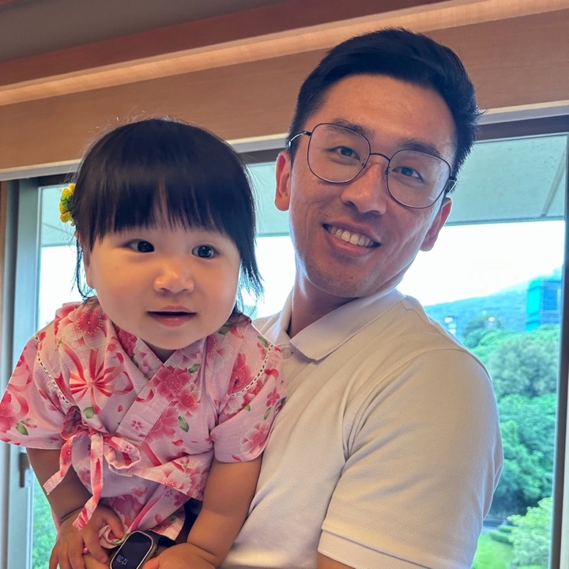

阿茲海默症 Alzheimer's
最常見。早期以「近期記憶」退化為主，病程緩慢持續進展。
桃園市政府衛生局 失智症教育訓練
失智症健康問題辨識與安全照護。從分辨「老了」與「病了」開始，到在家裡、在社區，讓長輩活得安全、也活得像自己。

鍾孟修職能治療師
今天三個半小時，我們沿著「辨識 → 判斷 → 照護 → 資源」這條路走一遍。下方時間表會依現在時間標示目前進行的段落。
失智症不是單一疾病，而是一群症狀：記憶、語言、判斷、空間感等認知功能退化，嚴重到影響日常生活與人際互動。
十年來平均壽命大致上升，2020 年達高峰（81.32 歲）；2022 年受新冠疫情影響降到 79.84 歲，之後連續三年回升，2025 年為 81.27 歲。女性一直比男性多活約 7 歲。活得更久，失智的人數也會跟著增加，所以預防與照護更重要。
資料來源：內政部 105–114 年簡易生命表；衛生福利部社會及家庭署 2026 年百歲人瑞統計；衛福部 2025 年人瑞統計。
65 歲以上長者失智症盛行率，約每 12～13 位長者就有 1 位。
65 歲以上輕度認知障礙（MCI）盛行率。這是介入、延緩的黃金時期。
失智症風險可能與 14 項可改變的危險因子相關，預防是做得到的。
資料來源：衛生福利部 2020–2023 全國失智症流行病學調查；The Lancet Commission on Dementia, 2024。
最常見。早期以「近期記憶」退化為主，病程緩慢持續進展。
中風或腦血管病變後出現，常呈階梯式退化，與三高控制密切相關。
認知功能時好時壞、常見鮮明視幻覺，合併類巴金森症狀，易跌倒。
發病較早（常在 65 歲前），以個性、行為改變或語言障礙為主，記憶反而較晚受影響。
| 正常老化的健忘 | 失智症 | |
|---|---|---|
| 忘記的範圍 | 忘記部分細節，例如人名 | 忘記整件事，例如剛吃過飯 |
| 提示後 | 經提醒會想起來 | 提醒了也想不起來 |
| 病識感 | 知道自己會忘，會用筆記補救 | 常否認忘記，或合理化 |
| 日常生活 | 不受影響 | 逐漸影響工作、理財、家務 |
| 病程 | 多年變化不大 | 持續且逐漸惡化 |
近期記憶差、重複問話、理財與複雜家務出錯，外表看似正常。照護重點：及早診斷、維持社會參與、規劃法律財務。
時間地點混淆、需要協助穿衣如廁、易出現遊走與妄想。照護重點：安全環境、防走失、精神行為症狀處理。
語言能力大幅退化、行動與吞嚥困難、日常全依賴。照護重點：預防壓傷、吸入性肺炎、舒適與善終。
2024 年《刺胳針》（The Lancet）失智症委員會指出，約 45% 的失智症與 14 項可改變的危險因子有關。下面每一條都是「從今天就能開始做」的事。
數字為「人口可歸因比例」：若完全消除該因子，全球失智症可減少的比例。Livingston G, et al. Dementia prevention, intervention, and care: 2024 report of the Lancet standing Commission. Lancet 2024;404:572–628。
怎麼解讀 這些是「相關」而非「注定」。2024 年一項整合 8 個世代、超過 4 萬人的研究發現，個性與「被診斷失智」有關，但和死後大腦的病理變化關係不大，代表好個性可能讓大腦更能承受病變。個性會隨年齡慢慢改變，培養興趣、維持人際、練習情緒調適，都是在幫大腦存款。
Terracciano A, et al. JAMA Psychiatry 2014；Aschwanden D, et al. Alzheimer's & Dementia 2021；Beck ED, et al. Alzheimer's & Dementia 2024；Boyle PA, et al. Arch Gen Psychiatry 2010。
目前沒有任何藥物可以治癒失智症。現有藥物的目標是「穩定症狀」或「延緩惡化」。
給家屬的提醒 百萬元新藥能爭取的是「慢一點」，前提是很早期就診斷。所以早期辨識（下一章的十大警訊與 AD8）比任何藥都更關鍵。是否適合用新藥，請與神經內科或精神科醫師詳細討論。
van Dyck CH, et al. NEJM 2023（Clarity AD）；Sims JR, et al. JAMA 2023（TRAILBLAZER-ALZ 2）；台灣臨床失智症學會 Lecanemab 台灣適當用藥建議 2025；中央社、科技新報 2025 報導。費用與健保給付狀態以醫院與健保署最新公告為準。
LDL 是 14 項因子中的「中年」危險因子，約占 7%。《刺胳針》委員會建議約從 40 歲開始檢測並治療過高的 LDL。點開下列問題看說明。
兩個數字的用途不同。130 是一般健檢報告的參考值，也是健保對「低風險、只有 1 項危險因子」者開始用藥的門檻；100 則是國際上公認的「理想值」，也是高風險者（例如糖尿病）要達到的目標。
現在台灣與國際都改成「看個人風險決定目標」：風險越高，目標越低。
| 風險等級（健保 2026 新制） | 開始用藥 | 目標 |
|---|---|---|
| 極高風險（如急性冠心症） | ≥ 55 | < 55 |
| 非常高風險（如已有心血管疾病） | ≥ 70 | < 70 |
| 高風險（如糖尿病） | ≥ 100 | < 100 |
| 中風險（2 項以上危險因子） | ≥ 115 | < 115 |
| 低風險（1 項危險因子） | ≥ 130 | < 130 |
| 無危險因子 | ≥ 160 | < 160 |
差異的原因：一是參考值與治療目標本來就是兩件事；二是每個人的心血管風險不同；三是健保資源與成本效益，低風險族群先從生活型態調整 3–6 個月開始。危險因子包括高血壓、男性 45 歲或女性 55 歲以上（或停經）、早發冠心病家族史、HDL 偏低、吸菸等。
單位 mg/dL。分級依健保署降膽固醇藥物給付規定及《2025 台灣血脂管理臨床路徑共識》整理；實際適用請以健保署公告與醫師判斷為準。
一部分是。雙胞胎與家族研究估計，LDL 高低約有一半與基因有關。
魚油主要降的是三酸甘油酯，不是 LDL。高劑量 omega-3 可降三酸甘油酯約 20–30%，但對 LDL 幾乎沒有幫助，含 DHA 的魚油甚至可能讓 LDL 小幅上升。一般保健品魚油用於預防心血管疾病，大型研究也沒有看到明顯效果。
最有效的是 statin 類藥物，可降低 LDL 約 30–50% 以上。生活型態也有幫助，合計約可降 10–20%：
| 類別 | 常見藥物 | LDL 降幅 | 給付 |
|---|---|---|---|
| Statin | 立普妥（atorvastatin）、冠脂妥（rosuvastatin）、pitavastatin 等 | 中強度 30–49%；高強度 ≥ 50% | 健保，第一線 |
| Ezetimibe | 怡妥，或與 statin 合併的複方 | 單用約 20%；加上 statin 再降約 20–25% | 健保，第二線 |
| PCSK9 抑制劑 | 瑞百安（evolocumab）、保脂通（alirocumab），皮下注射 | 再降約 50–60% | 符合條件者健保（2025 年 9 月起門檻下修至 LDL ≥ 100，需先用過前兩線），其餘自費 |
大多數人用健保的 statin（必要時加 ezetimibe）就能達標。Statin 有最多降低心肌梗塞、中風與死亡的證據，是第一選擇。自費針劑適合極高風險、用足健保藥物仍未達標，或無法耐受 statin 的人。
常見迷思：statin「傷肝傷腎」。實際上嚴重副作用很少，少數人會肌肉痠痛，可與醫師討論換藥或調整劑量。請勿自行停藥，用什麼藥請依醫師評估個人風險決定。
健保署降膽固醇藥物給付規定；中央社 2025/8/19 PCSK9 擴大給付報導；2018 AHA/ACC 與 2019 ESC/EAS 血脂指引。
點開每一張卡片，看看「失智警訊」與「正常老化」的例子有什麼不同。課堂上可以請學員舉出身邊的實例。
請依長輩的狀況點選。由熟悉長輩的家屬或照顧者填寫最準確。
怎麼用：AD8 共 8 題，詢問的是「改變」，不是能力高低。因認知問題而有改變的勾「是」，得 1 分；「不是」與「不知道」不計分。
怎麼看：總分 2 分以上，建議到神經內科、精神科或記憶門診進一步評估。這是篩檢，不是診斷，分數低也不代表完全沒問題。
課堂練習 兩人一組，一人扮演家屬描述長輩近況，另一人用 AD8 訪談，練習把「他最近怪怪的」轉成可以記錄的具體描述。
AD8 量表：Galvin et al., Neurology 2005；台灣中文版由台灣失智症協會推廣。
失智長輩常說不清楚哪裡不舒服，身體的問題往往以「行為改變」的方式出現。照顧者要學會讀懂這些訊號。
| 譫妄 Delirium | 失智症 Dementia | |
|---|---|---|
| 發生速度 | 急性，數小時到數天內 | 緩慢，數月到數年 |
| 一天之中 | 時好時壞，夜間常加重 | 相對穩定 |
| 注意力 | 明顯無法專注、答非所問 | 早期大致保留 |
| 意識 | 混亂、嗜睡或躁動 | 早期清楚 |
| 可逆性 | 找到原因並治療後多可改善 | 多為持續進展 |
判斷原則 長輩「突然」變得比平常更混亂、更嗜睡或更躁動，先想到譫妄，盡快就醫。常見誘因：泌尿道感染、肺炎、脫水、便秘或尿滯留、疼痛、新用藥（特別是安眠鎮靜藥）、住院或搬家等環境改變。
| 問題 | 為什麼容易發生 | 照顧者可以觀察 |
|---|---|---|
| 跌倒與骨折 | 步態、判斷力、空間感退化，加上藥物 | 走路變慢拖步、常撞到東西、半夜起床如廁 |
| 吸入性肺炎 | 吞嚥協調變差，中重度更明顯 | 吃飯嗆咳、聲音濕濕的、反覆發燒 |
| 泌尿道感染 | 喝水少、憋尿、失禁、衛生照顧不易 | 突然更混亂、尿味重、頻尿 |
| 營養不良與脫水 | 忘記吃喝、不會表達口渴、咀嚼困難 | 體重下降、皮膚乾、尿色深、便秘 |
| 便秘與失禁 | 活動少、喝水少、找不到廁所 | 腹脹、躁動、內褲弄髒、藏衣物 |
| 睡眠障礙 | 生理時鐘受損、白天日照與活動不足 | 日夜顛倒、傍晚躁動、白天打瞌睡 |
| 疼痛被忽略 | 無法清楚說出哪裡痛 | 表情、護著身體、拒絕照顧（可用 PAINAD） |
| 多重用藥 | 多科就醫、忘記吃或重複吃 | 頭暈、嗜睡、跌倒、更混亂 |
| 口腔問題 | 忘記刷牙、假牙不合 | 口臭、牙齦腫痛、吃飯變少 |
| 憂鬱與淡漠 | 能力下降的挫折、缺少有意義的活動 | 整天坐著、不想參與、睡多吃少 |
具體記下行為：什麼時候、在哪裡、和誰、發生前後做了什麼。
找原因：疼痛、便秘、感染、藥物、睡眠、環境太吵、照顧方式。
團隊與家屬一起訂出非藥物的做法，例如調整作息、簡化環境、安排活動。
試行後追蹤是否改善，無效再調整，必要時才考慮藥物。
DICE：Kales, Gitlin & Lyketsos, BMJ 2015。
安全不是把長輩關起來，而是調整環境，讓他在可控制的風險裡，繼續做自己能做的事。
已完成 0 / 0 項
以小組為單位，選一位成員家中或服務個案的家，逐一勾選。勾不到的項目，就是今天回去可以改善的地方。
環境設計小訣竅 失智長輩對顏色對比較敏感。馬桶座、扶手、門框用與牆面不同的顏色；不希望長輩開的門，則可以漆成和牆一樣的顏色、或掛上布簾。
鏡子 部分長輩會把鏡中的自己當成陌生人而害怕，出現這種情況時可以把鏡子遮起來。
失智者每年發生跌倒的比例，依失智類型不同；約為認知正常長者的 2 倍，受傷與骨折也更嚴重。
由職能治療師到家評估並改善環境，高風險長者的跌倒率可降低約三成（Cochrane 2023）。
以平衡與肌力為主的運動，可降低社區長者約兩成的跌倒率（Cochrane 2019）。
透過 ICOPE、據點與門診，問三題：過去一年跌倒過嗎？走路或站著會不穩嗎？擔心跌倒嗎？
跌倒受傷、一年跌 2 次以上、衰弱或曾倒地爬不起來，屬於高風險，轉介做完整評估。
社區據點提供規律的平衡肌力課程；高風險者由職能、物理治療師做居家評估與運動處方。
人行道平整、照明充足、樓梯扶手、綠燈秒數足夠；申請長照居家無障礙改善補助。
跌倒後 48 小時內回訪，找出原因，避免同樣的事再發生。
Montero-Odasso M, et al. World Guidelines for Falls Prevention, Age Ageing 2022；Clemson L, et al. Cochrane 2023（環境介入）；Sherrington C, et al. Cochrane 2019（運動）。
| 智慧定位鞋墊 | AirTag（裝在鞋墊或鞋內） | GPS 手錶／手環 | 愛的手鍊 | |
|---|---|---|---|---|
| 定位原理 | 內建 GPS＋行動網路，主動回報位置 | 沒有 GPS，靠附近路人的 iPhone 匿名回報位置 | GPS＋行動網路 | 不能定位，靠編號與專線協尋 |
| 即時性 | 可即時查看、看移動軌跡 | 附近有 iPhone 才會更新；鄉間、山區、深夜可能好幾小時沒有位置 | 可即時查看 | 需要有人發現並通報 |
| 電子圍籬 | 有，離開設定範圍會推播警示 | 沒有真正的電子圍籬，只有以物品為主的「遺留通知」 | 多數有 | 無 |
| 會不會被拿掉 | 藏在鞋內，長輩較不會察覺或拆掉 | 藏在鞋內，但要固定好 | 長輩可能嫌不舒服、自行取下 | 不易取下 |
| 電力 | 需定期充電（依產品約數天） | 鈕扣電池約 1 年 | 需經常充電 | 不需要 |
| 使用限制 | 要穿那雙鞋才有效；有月租或服務費 | 照顧者需用 iPhone；Apple 設計用來找物品而非找人，離開主人一段時間會發出聲響並通知附近 iPhone | 有月租或通訊費 | 需先申請 |
| 費用與補助 | 2026 年 7 月起列入長照 3.0 智慧科技輔具全租賃，3 年最高補助 6 萬元（長照需要等級 2 級以上，經輔具評估） | 約一千元，無月費，無補助 | 自費或部分縣市補助 | 多由社會局協助申請 |
怎麼選 AirTag 便宜、電池久，適合「都市、輕度、偶爾外出」作為備援；但它不是即時定位，也沒有電子圍籬，不建議當成走失風險高長輩的唯一工具。容易走失或已走失過的長輩，優先考慮有 GPS 與電子圍籬的智慧鞋墊或手錶，並搭配愛的手鍊與指紋建檔。任何裝置都只是輔助，最重要的是了解長輩想出門的原因。
電子圍籬是在地圖上畫一個看不見的範圍，例如以家為中心、半徑 300 公尺，或家到市場、公園的路線。長輩一離開這個範圍，照顧者的手機就會收到通知，可以在走遠之前找到人。
室內也有「室內版電子圍籬」：門口感應器、離床感應墊、出入口門鈴，長輩開門或下床就提醒照顧者。
依長輩習慣路線設定，不要小到在家附近散步就一直誤報；GPS 有數十公尺誤差。
依作息設定，例如傍晚到夜間加強提醒。
事先決定誰收通知、誰出門找、多久找不到就報警 110。
電量、鞋子有沒有換、App 通知是否正常。
向長輩說明並取得同意，用最少限制的方式保護安全與自主。
衛生福利部長照 3.0 智慧科技輔具租賃（2026 年 7 月 1 日上路，查詢 ltcat.mohw.gov.tw）；Apple「尋找」網路與物品安全提醒說明。產品功能與補助資格以官方資料庫與 1966 評估為準。
好的照護，是讓長輩在被理解的關係裡，盡可能自己完成生活中的事。
復能不是「把認知練回來」，而是讓長輩在自己家裡、自己在意的生活中，用環境、輔具與策略，重新做得到。
2022 年國際專家共識定義：復能是以人為中心的整體照護方式，目標是提升身體或其他功能，讓長輩在居住的地方維持或增加有意義日常活動的獨立性，並減少長期照顧需求。由受過訓練的跨專業團隊多次到宅，先完整評估、訂出目標，再透過參與日常活動、居家環境調整、輔具，以及家人與社會網絡的參與來達成。台灣長照的「復能照護」也採同樣精神：專業人員與長輩、家屬共同訂生活目標，強化自我照顧能力。
Metzelthin SF, et al. Development of an internationally accepted definition of reablement: a Delphi study. Ageing & Society 2022。
| 方法 | 做法 | 研究結果 |
|---|---|---|
| 認知訓練 | 反覆練習記憶、注意力題目或電腦遊戲 | Cochrane 2019：輕中度失智者的認知測驗分數可能小幅進步，證據品質低；練的題目變好，但很少轉移到日常生活功能 |
| 認知刺激治療（CST） | 團體活動、討論、懷舊、多感官 | Cochrane 2023：認知、溝通與生活品質有小到中度改善 |
| 目標導向認知復健 | 職能治療師到宅，針對長輩自己選的生活目標練習（如使用手機、自己煮早餐） | 英國 GREAT 試驗（475 人）：目標達成度明顯提升，效果持續 9 個月；但一般認知分數沒有變化 |
| 環境與照顧者策略 | 居家環境調整、活動簡化、教照顧者溝通與提示 | 美國 COPE、TAP 試驗：日常功能依賴降低、參與度提升、行為症狀減少，照顧者負擔也下降 |
| 社區復能方案 | 短期密集、多次到宅、跨專業 | 系統性回顧：可改善 ADL、IADL 與生活品質，早期失智、MCI 效果較好；機構住民證據不足 |
結論 研究支持您的看法：單純的認知訓練對失智長輩的日常生活幫助有限；真正讓長輩「做得到」的，是以生活目標為核心，搭配友善環境、輔具與照顧策略。訓練仍有價值，但要放在真實情境中練，練的是長輩在乎的事。
Bahar-Fuchs A, et al. Cochrane 2019；Woods B, et al. Cochrane 2023；Clare L, et al. Alzheimer's & Dementia 2019（GREAT）；Gitlin LN, et al. JAMA 2010（COPE）；Gitlin LN, et al. Am J Geriatr Psychiatry 2008（TAP）；Reablement scoping review of reviews, 2025。
給 5–10 秒，看他能不能自己開始。
「我們先把右手放進袖子裡。」
指著衣袖、輕拍要用的那隻手。
自己做一次穿袖子的動作給他看。
手放在他的手上，引導開頭，讓他完成後半。
前面都試過仍做不到時，才由照顧者代勞。
復能的核心是從最少的協助開始。照顧者「做得快」，長輩就失去練習的機會，能力退化得更快。
把目標放在長輩自己在意的事：想自己吃飯、想去市場、想照顧盆栽。把這些事拆成小步驟，每天的生活就是訓練。
世界衛生組織《渥太華憲章》（1986）：健康促進是「使人們能夠增加對自身健康的掌控，並改善健康的過程」。它包含五個行動：建立健康的公共政策、創造支持性環境、強化社區行動、發展個人技能、調整健康服務方向。
| 疾病管理 | 健康促進 | |
|---|---|---|
| 對象 | 已確診疾病的人 | 所有人，不論有沒有病 |
| 目標 | 控制病情、減少併發症與住院 | 提升身心功能、生活品質與參與 |
| 主導 | 醫療團隊 | 個人、家庭、社區與政策一起 |
| 指標 | 血壓、血糖、再住院率 | 內在能力、活動參與、幸福感 |
| 例子 | 糖尿病衛教、按時服藥 | 社區運動班、友善步道、長輩當志工 |
方向是對的。疾病管理是「把問題壓下來」，健康促進是「把能力養上去」，關注的是什麼讓人健康，而不只是什麼讓人生病。
兩點補充：
走路是很好的起點，但不夠全面。世界衛生組織 2020 年建議長者：
慢走對肌力與平衡的刺激不足。更積極的做法是加入速度、阻力、平衡挑戰與雙重任務，例如快走加爬坡、彈力帶、單腳站、邊走邊數數。
認知方面，研究支持的是「多面向」與「有挑戰的新學習」：芬蘭 FINGER 試驗結合運動、飲食、認知訓練與血管風險控制，認知表現比對照組好；2025 年美國 US POINTER 試驗發現，有結構、有人帶領的多面向介入，比自己隨意做效果更好。學新樂器、新語言、攝影、桌遊、當志工，都比反覆做熟悉的事更能刺激大腦。
可以用同一個框架：「生活型態是共同的根」。同一套習慣，同時保護心、腦、癌症與衰弱。
| 主題 | 健康促進的切入點 |
|---|---|
| 血管健康 | 美國心臟學會「生命八要素」：飲食、運動、不吸菸、睡眠、體重、血脂、血糖、血壓。對心臟好的，對大腦也好 |
| 疾病預防 | 三段預防：一段是健康生活與疫苗，二段是成人健檢與篩檢，三段是已有疾病者的復能與避免失能 |
| 癌症預防 | 不吸菸、少酒、控制體重、多蔬果、規律運動；參加國健署癌症篩檢（大腸癌、乳癌、子宮頸癌、口腔癌、肺癌） |
| 衰弱預防 | ICOPE 長者量六力：認知、行動、營養、視力、聽力、憂鬱。重點是蛋白質攝取、肌力訓練與社會參與 |
對長輩說的時候，可以把目標從「不要生病」換成「想做的事一直做得到」：能自己去市場、能帶孫子、能參加據點活動，這就是健康促進最好的動機。
WHO Ottawa Charter for Health Promotion 1986；WHO Guidelines on Physical Activity and Sedentary Behaviour 2020；Ngandu T, et al. Lancet 2015（FINGER）；Baker LD, et al. JAMA 2025（US POINTER）；AHA Life's Essential 8, 2022；WHO ICOPE。
發現長輩走失立即報案，不需等待 24 小時。
各縣市設有失智共同照護中心協助確診與個案管理，社區據點提供認知促進、家屬支持團體。
國民健康署醫事管理科，本課程主辦單位。
由中華民國老人福利推動聯盟辦理的防走失手鍊，可洽各地社會局或長照管理中心。
老人福利推動聯盟今天課程中提到的照護、活動與衛教工具，都可以免費使用。點擊截圖即可開啟網頁，回到據點、日照或居家時直接帶活動。
講師｜鍾孟修 職能治療師 愛迪樂有限公司 執行長、《讓你健康不失智》作者。課後有任何照護或活動上的問題，歡迎到粉絲專頁留言交流。